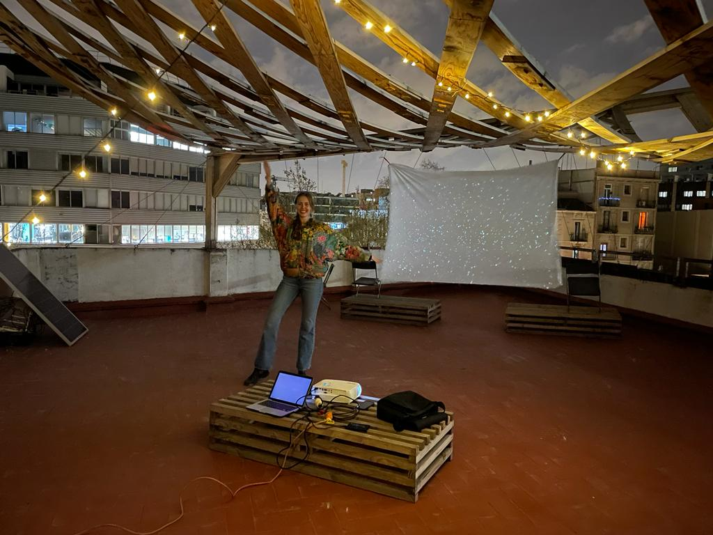
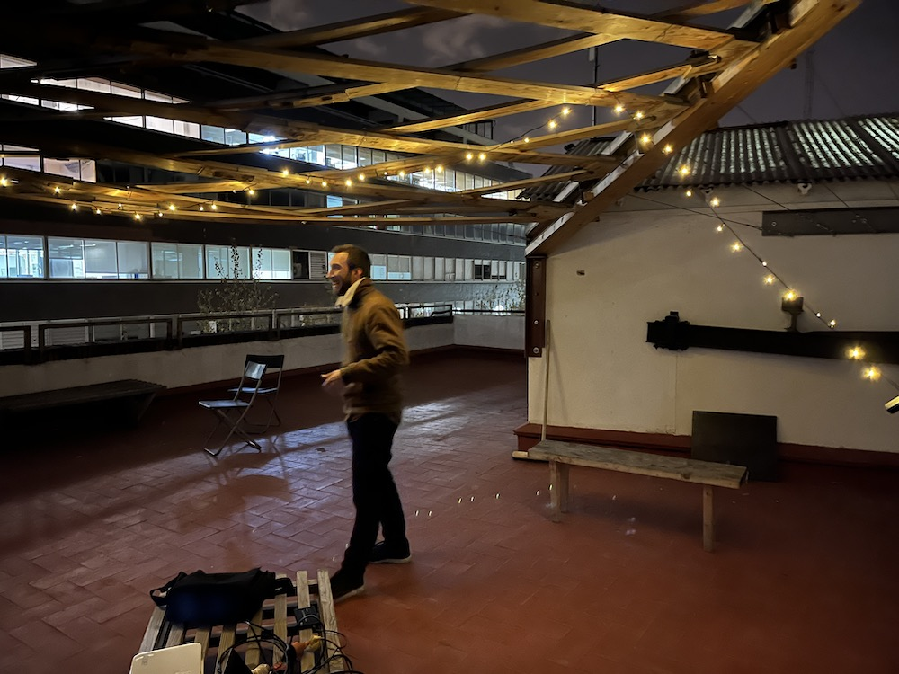
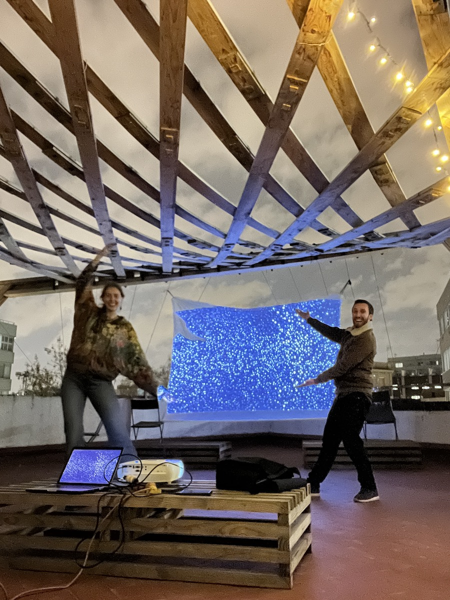
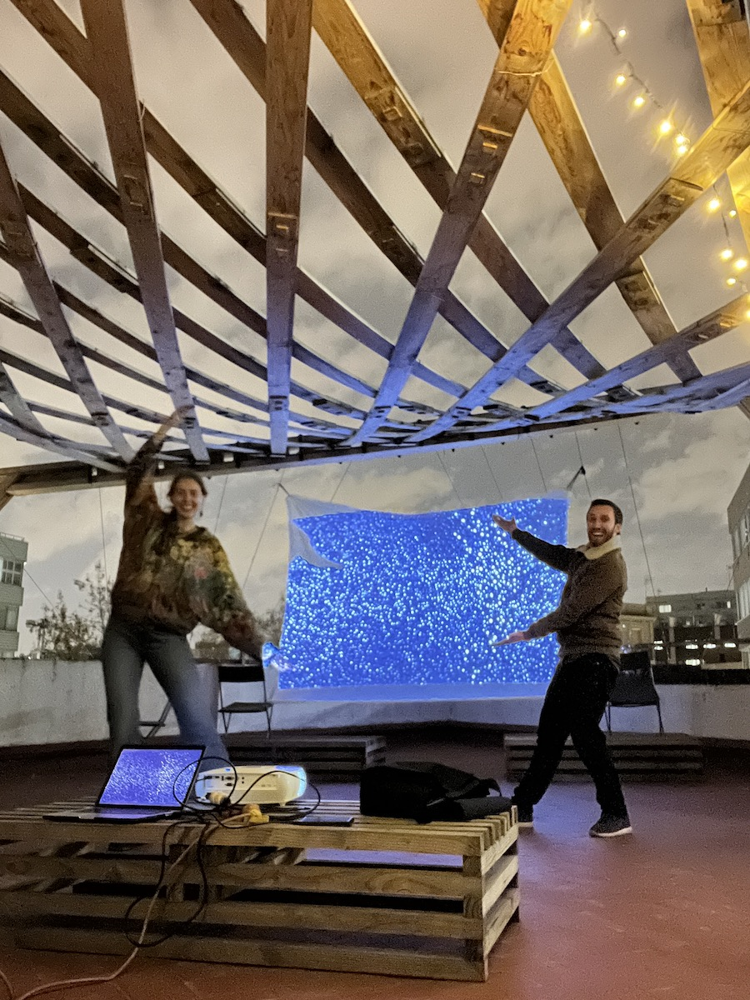
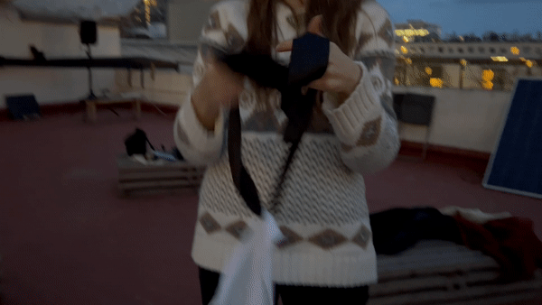

Here is the full video of my project with Chris
In a city inundated with light pollution, is it possible to restore the magical feeling we once had when looking up at the sky? We have been gazing at the stars for centuries, and connecting the constellations inevitably connects us as well. What happens when we can no longer see the stars?
This project is a collaboration between Tatiana Butts and Christian Ernst, who each worked on visual and audio respectively. The audio music was produced and mixed in Ableton Live, using Magenta (based on Tensorflow’s machine-learning framework), most of the melodies were generated with the help of algorithms. Based on these, instruments and effect chains were built to ‘perform’ the notes and modulate their parameters. The video was then created using sound reactive particles in TouchDesigner and animations + visual effects After Effects.
On Wednesday March 23rd, Tatiana and Chris from the Master in Design for Emergent Futures projected Artificial Constellations, for the first time on the IAAC rooftop.
Key reflection points:
- Pre-production
- Set up: screen, benches, audio, projector, candles
- The people who came
- Presentation
- Audio malfunction
- Video display
- Activity at the end
- Feelings
On Wednesday 23rd of March was the day of my collaborative intervention with Chris. Just the week before we were unsure if we could manage all the tasks that had to be completed before the final day, and we almost postponed the entire event. I am glad that I pushed through and motivated us to keep working and get it all done in time.
I spent the weekend + Monday finishing up the video, exporting the sound reactive particles from TouchDesigner into After Effects and doing the video editing there, alongside animations, music sync and special effects. I got the video done by Monday afternoon so that we could do a final test in the evening with the complete video. Both Chris and I were shocked and amazed at how beautiful the projection actually was. We couldn’t have imagined it being better. We were worried about the light, the brightness of the projection, the weather, the sound etc. but none of that turned out to be a problem.


 

I remember that we viewed the entire video with the wind tugging at the screen, making the experience more immersive because the artificial stars blended in with reality. Just as the final credits finished being displayed, a giant gust of wind hit the sheet and ripped off 2 of the 4 corners in a grandiose cinematic ending. Chris and I laughed because it felt so perfectly planned.
The only thing we could hope for was good weather on Wednesday…
On Wednesday, it was raining all morning. I came to school angry and sad that we may have had to cancel the event. Instead, in the afternoon, the sun came seemingly out of nowhere and dried up the streets and the roof. I cheered up.
